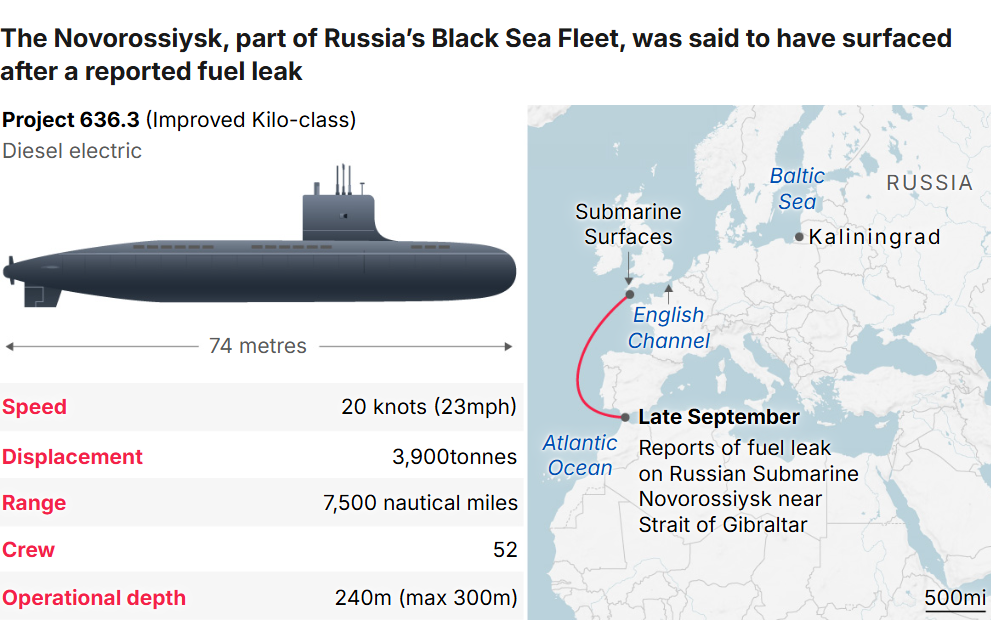
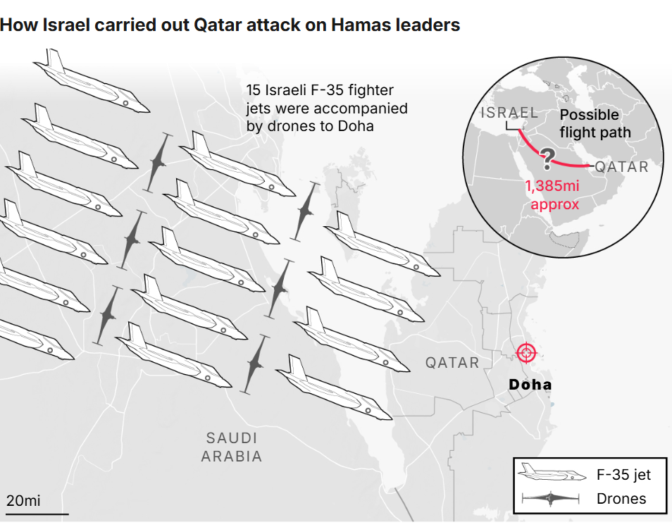
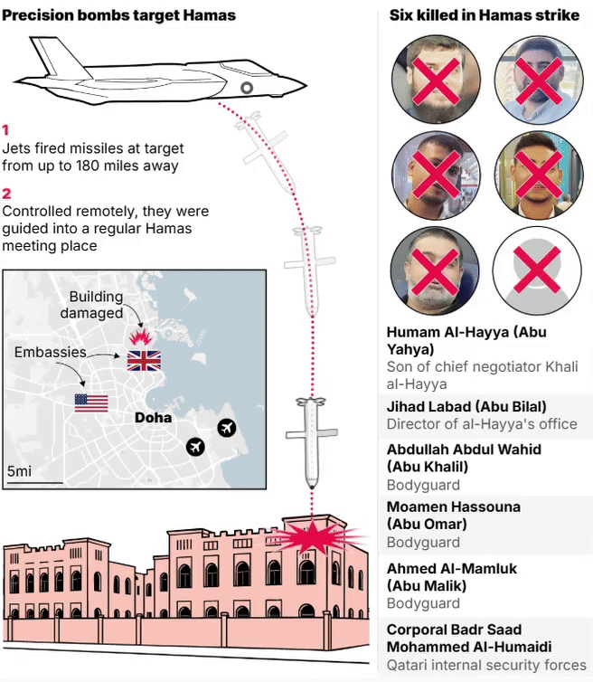
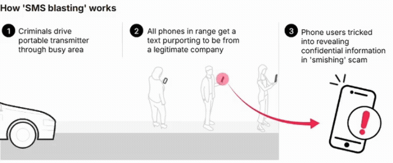
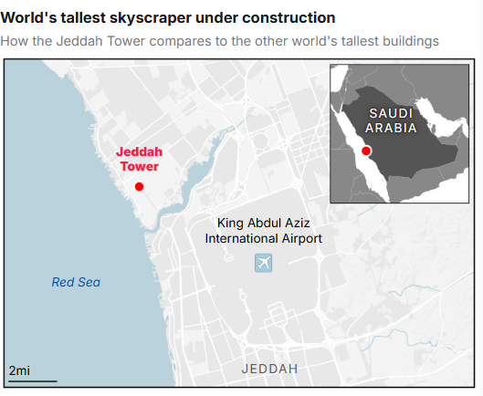
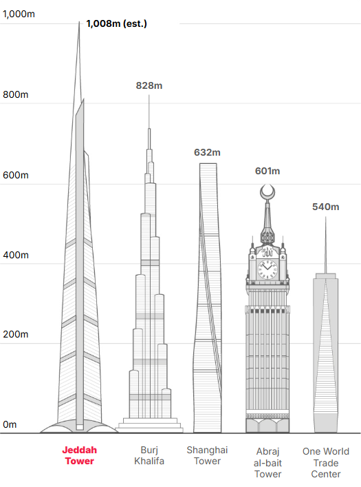
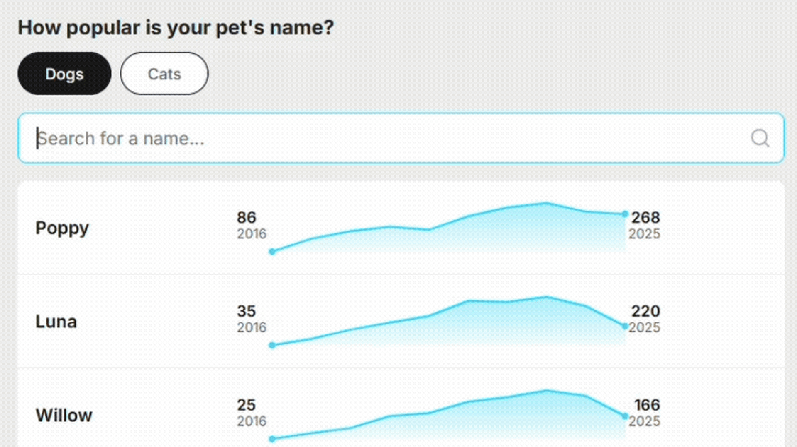

Interactive & responsive editorial graphics
ai2html · CSS animations · Flourish
News moves fast and data can often feel abstract. My goal is to turn complex editorial topics into engaging visual stories that work perfectly on any screen. Whether it is a real-time breaking news map or a deep dive demographic chart I focus on creating interactivity that helps readers grasp the scale of a story instantly.
I use a hybrid workflow of ai2html for precise typographic control and Flourish for scalable data handling. When a story requires something unique I write custom CSS and JavaScript to bridge the gaps. This ensures that every graphic is truly responsive and shifts layouts seamlessly from desktop to mobile without losing clarity.









From custom coded charts to high fidelity infographics these projects blend a variety of design techniques to transform complex information into intuitive stories. Every graphic is built with a focus on accessibility and user engagement to ensure the narrative remains the priority.